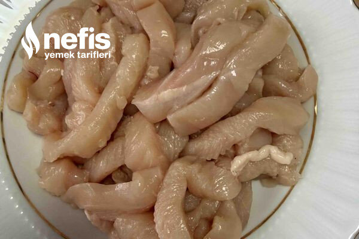

🍽️ 2-4 kişilik⏱️ Hazırlık: 10 dk🔥 Pişirme: 15 dk🏷️ Tarifler
Malzemeler
- 2 tavuk göğsü (parmak şeklinde kesilmiş)
- 3 yemek kaşığı un
- Yarım şişe maden suyu
- Tuz
- Karabiber
- Yarım çay kaşığı karbonat
- Sıvı yağ
Hazırlanışı
- Un, maden suyu, karbonat, tuz ve karabiberi karıştırıyoruz.
- İçine tavukları atıp harmanlıyoruz.
- Üzerini kapatıp1 saat kadar buzdolabında bekletiyoruz.
- Tavamıza yağı alıp ocağı açıyoruz.
- Kızgın yağda tavukları kızartıyoruz nefis tavuklarımız servise hazır afiyet olsun 😊.